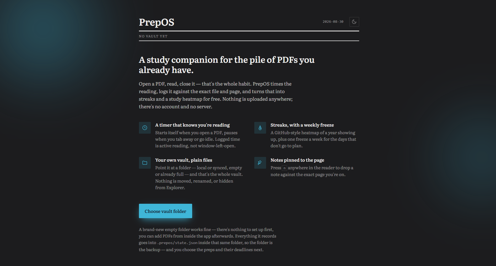
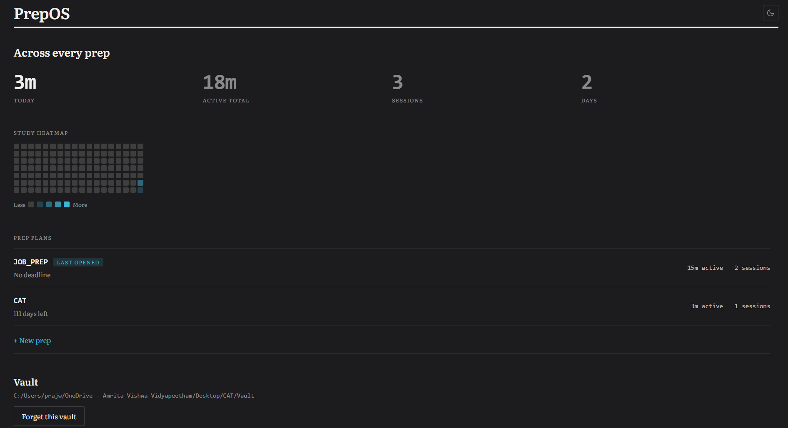
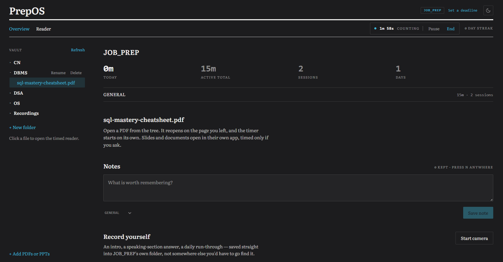

Windows · local-first · your own files
A study vault, not another app to babysit.
PrepOS turns a folder you already own into a timed reading room: open a PDF and the clock starts itself, close it and the sitting is logged — streaks, a study heatmap and per-prep stats built from nothing but that. Nothing is ever uploaded anywhere.
Free, open source. Windows 10/11 · 64-bit.

What you see before pointing it at a folder — no vault, no account, nothing to set up first.

Every prep, one ledger — today's time kept separate from the running total.

A prep's own workspace: vault, timed reader, notes and camera practice, together.
What it actually does
Nothing here is a service. There's no account, no sync server, no analytics call home — just a folder on your disk and an app that reads it honestly.
Your files stay yours
Point PrepOS at a folder — on your disk or synced through OneDrive — and that's the whole vault. PDFs, slides, recordings, notes: all plain files you can see in Explorer, backed up however you already back things up.
A timer that knows you're actually reading
Open a PDF and the clock starts on its own; it pauses when the window's hidden and when you've gone idle, so the number is honest active time, not wall time with the window left open on a coffee break.
Streaks, with a freeze budget
A qualifying day keeps the streak alive; one freeze a week bridges a bad Tuesday without pretending it didn't happen. A GitHub-style heatmap shows a year of showing up at a glance.
One workspace per prep
An exam, an interview, a certification — anything you're working toward gets its own folder, its own stats, and optionally its own deadline countdown. Switch between them from one dashboard.
Notes pinned to the page
Press n anywhere in the reader to drop a note against the exact page you're on — kept with the session, not scattered across a separate app you'll forget to open.
Camera practice, saved straight to the vault
Record an intro, a speaking-section answer, a daily run-through — it streams straight to disk inside that prep's own folder, not to a temp file somewhere you'll lose track of.
Installing it
One installer, no account to create. It asks once for the folder to use as your vault and remembers it from then on.
Download the installer
Grab the latest .exe from the Download button above, or the Releases page on GitHub.
Run it
Windows may ask you to confirm an unsigned app the first time — that's expected for a small independent build.
Point it at a folder
Pick any folder for your vault — new or existing — and PrepOS takes it from there.
Building it yourself
PrepOS is a Tauri app — a React front end over a small Rust shell. If you'd rather build from source than run the installer:
Clone & install
git clone the repo, then npm install.
Build
Run npm run tauri build. This needs the Rust toolchain and the usual Tauri Windows prerequisites installed first.
Install the result
The installer lands in src-tauri/target/release/bundle/ — run it like any other.